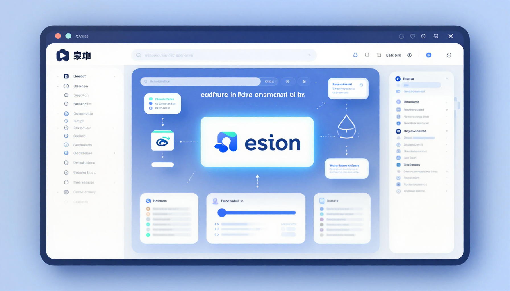

Notion AI Review (2026): Is It the Best AI Productivity Tool?

What Is Notion AI?
Notion AI brings artificial intelligence directly into your workspace. Integrated seamlessly into Notion's popular productivity platform, it can write, summarize, brainstorm, translate, and organize your content — all without leaving your workflow.
Key Features
- AI Writing: Draft content, emails, and documents from prompts
- Summarization: Instantly summarize pages, meetings, and documents
- Brainstorming: Generate ideas and outlines
- Translation: Translate content between languages
- Action Items: Extract tasks and next steps from notes
- Q&A: Ask questions about your workspace content
- Autofill Databases: AI-powered database property completion
Performance
Writing: Notion AI produces solid first drafts and is great for overcoming writer's block. Quality is good but not at the level of dedicated AI writers like Claude. Score: 7.5/10
Summarization: This is where Notion AI shines. Summarizing meeting notes, long documents, and project updates is fast and accurate. Score: 9/10
Integration: The best part about Notion AI is that it's built into your existing workflow. No context switching needed. Score: 9.5/10
Pros
- Seamless integration into Notion workflow
- Excellent summarization features
- Great for brainstorming and ideation
- Q&A across your entire workspace
- Good value at $10/mo add-on
Cons
- Writing quality below dedicated AI assistants
- Limited to Notion's ecosystem
- Requires Notion subscription + AI add-on
- No standalone app
Pricing
| Plan | Price | AI Features |
|---|---|---|
| Free | $0 | Limited AI access |
| Plus | $10/mo | Full workspace + AI add-on available |
| Business | $18/user/mo | Advanced features + AI add-on |
| AI Add-on | +$10/mo | Full Notion AI capabilities |
Final Verdict
Notion AI is perfect for teams and individuals already using Notion. The integration is seamless and the summarization features are excellent. If you live in Notion, the AI add-on is worth it. 4.4 out of 5 stars.
🎁 Free AI Tools Guide 2026
Download our free guide with 50+ AI tool comparisons, pricing, and recommendations.
Download Free Guide →